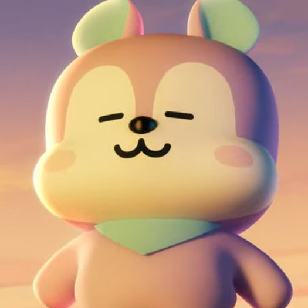

Nome verdadeiro: Jung Ho-seok (정호석).
Cidade natal: GwangJu, Coreia do Sul.
Data de nascimento: 18 de fevereiro de 1994.
No BTS: rapper, dançarino, compositor e produtor.
Assim como o criador, o personagem simplesmente ama a dança. Onde quer que haja música, você deve encontrar o cavalo roxo com uma máscara azul, que protege sua verdadeira identidade, fazendo alguns movimentos legais. Vale lembrar que J-Hope quis que o nariz do personagem fosse em forma de coração, porque seus lábios formam um coração quando ele ri. Para mostrar suas expressões, seria legal se o Mang tirasse a máscara enquanto dança. Assim, em 2023, para ter um desempenho perfeito, Mang tirou a máscara. Agora ele está pronto! Ele dançou muito bem sem a máscara, ele é corajoso.
Antes de integrar o BTS, J-Hope já se destacava no cenário da dança, tendo ganho várias competições de dança e alcançado fama no underground de sua cidade natal Gwangju. Ele ainda participou do grupo de dança NEURON. Em 2009, o jovem fez uma audição para a empresa JYP, mas ficou em 200º. Em uma nova tentativa no ano seguinte, J-Hope ficou em 28º e foi um dos quatro ganhadores do prêmio de popularidade. Isso lhe rendeu uma bolsa de estudos na Escola de Belas Artes e Música de Seul.
Por ainda estar no Ensino Médio, J-Hope decidiu não aceitar a bolsa. Alguns meses depois, contudo, a BigHit (na época, bem menor que a outra gravadora) lhe ofereceu uma oportunidade de contrato como trainee e ele aceitou. Foi contratado pela Big Hit em 2010, sem experiência de canto ou rap, mas seus três anos como trainee lhe renderam grande aprendizado e descobertas nessas áreas.
Em 2021, doou 150 milhões de won para apoiar crianças com deficiências visuais e auditivas, e mais 100 milhões de para ajudar crianças afetadas pela violência na Tanzânia. É conhecido como o "sunshine" (brilho do sol) do grupo, por sua personalidade sempre feliz e animada.
@Esthefani_moraes